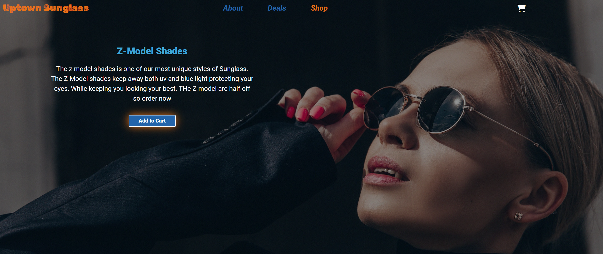

My Projects

Petes Pizza
Pete’s Pizza is a small brochure website I created to demonstrate my ability to be able to create unique websites. During the build process, the languages I used HTML, CSS, SASS, JavaScript and JQuery. I enjoyed building Pete’s Pizza because it helped learn and develop my web development skills.

Uptown Sunglasses
Uptown Sunglasses is a ecommerce website that was built using HTML, CSS, a little Bootstrap, Javascript and GSAP. This site was both challenging and fun all in one. I really enjoyed animating the different sections that they open and close properly without disrupting the integrity of the site or other animations.